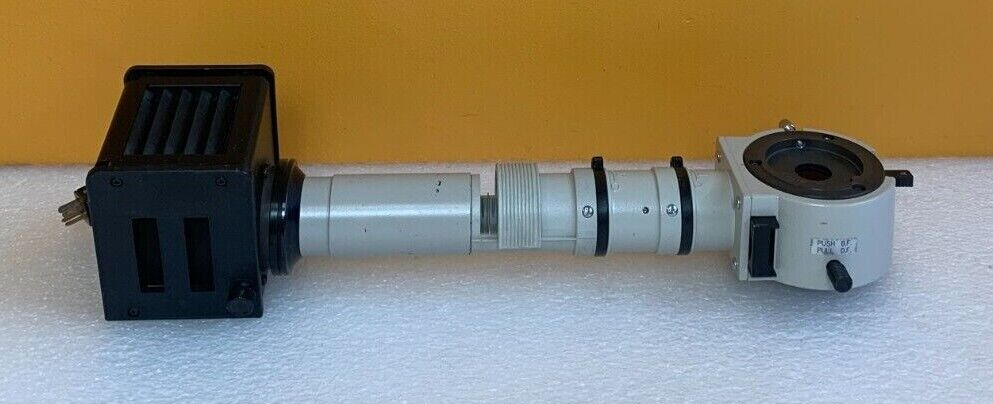
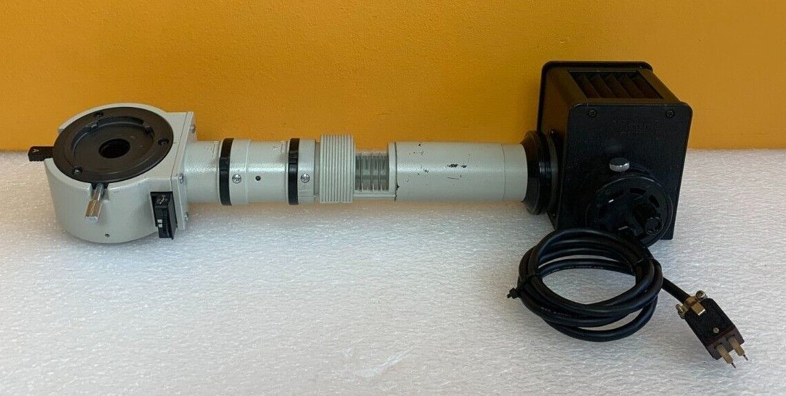
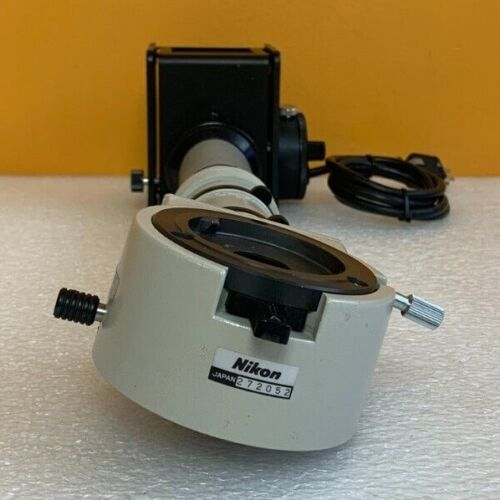
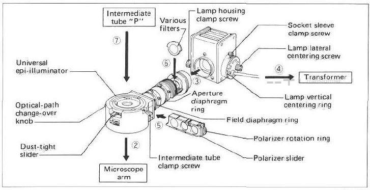
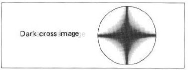
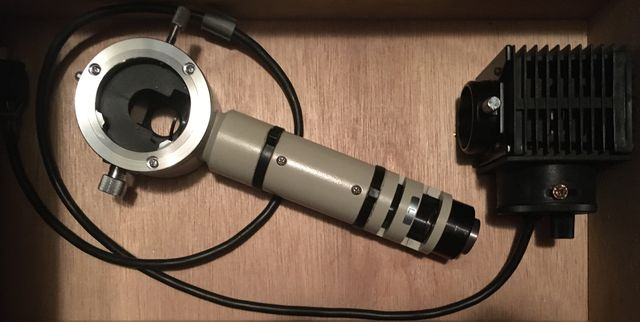

back

Nikon Vertical Illuminators
There are at least 5 different EPI illuminators for Optiphot
- UV
- fiber light
- short halogen (no irises; filter slots near dovetails)
- long halogen
- (6V) version; chrome knob rotates brightfield-only beam splitter in/out
- (12V) version with B/D slider; use DF also for diascopic
Nikon Universal EPI Vertical Illuminator (12V)
Polarizer can mitigate specular reflections and improve contrast.
eBay item number: 234568312474
Seller assumes all responsibility for this listing.
Last updated on May 26, 2022 12:37:17 PDT View all revisions
Item specifics
Condition: Used
Brand: Nikon
Nikon Universal EPI Vertical Illuminator
BF / DF, Polarizer Slider
Includes Lamp Housing (No Bulb),
For Optiphot + Labophot Microscopes.
Tested!
**Purchases Include a 14 Day Money Back Guarantee**
BestTestUS is a Part of Tech-Systems Electronics, Inc. (Est. 1989)




Lamp centering
- fully
PUSH B.F.
- turn power ON, set 6V
- fully open diaphragms
- Place ND filter on the stage; focus 10x objective on it
- remove eyepiece; focus lamp filament on objective exit pupil
- center filament on exit pupil; replace eyepiece
Orient polarizer
- nearly focus 40x objective on ND filter
- insert analyzer
- remove eyepiece; rotate polarizer for dark cross image:

Pull D.F. for diascopic
- see also polarizing filters
- M Plan 6V Illuminator
